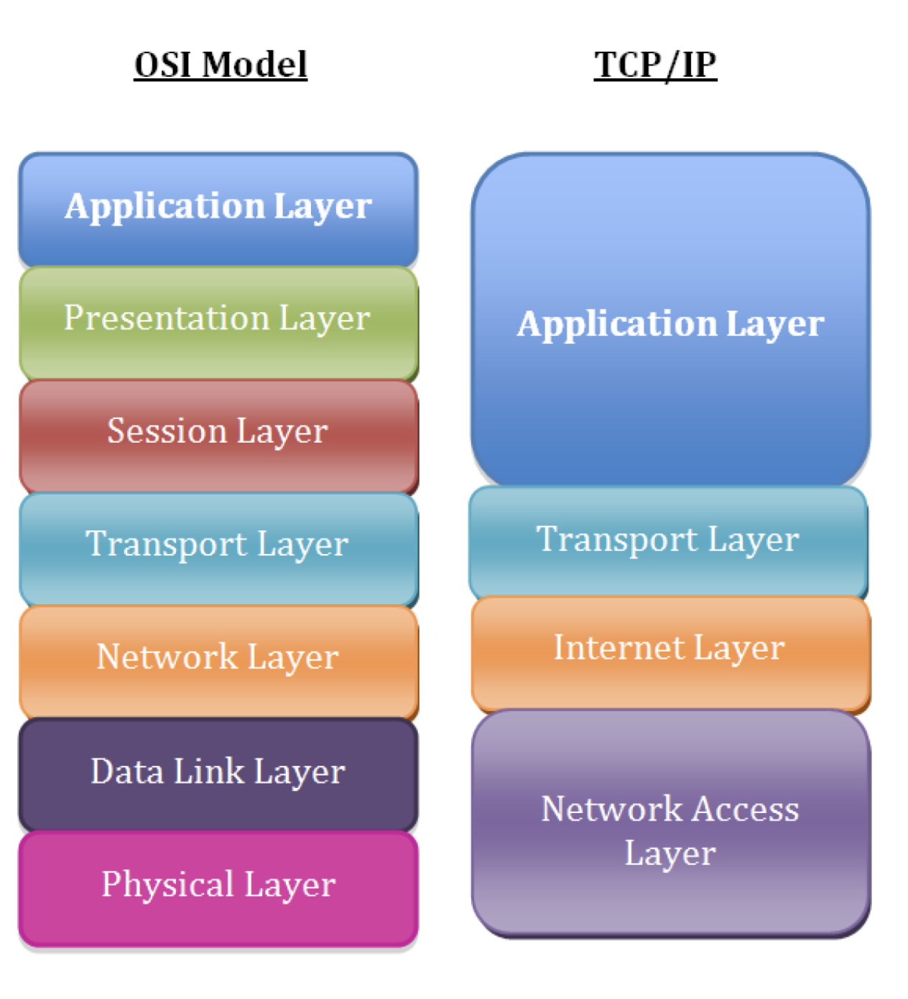

OSI/TCP IP
TCP/IP model more accurately represents the suite of protocols that are deployed in modern networks.

The layers in the TCP/IP network model, in order, include:
Layer 5: Application
Layer 4: Transport
Layer 3: Network/Internet
Layer 2: Data Link
Layer 1: Physical
Layer 1: The physical layer
Identify the cable has been plugged in, but we can easily troubleshoot physical layer problems from the Linux command line.
ip link show
Any indication of DOWN in the above output for the eth0 interface. This result means that Layer 1 isn’t coming up.
We might try troubleshooting by bringing up the interface(eth0) just to rule out that network interface disabled can be ruled out.
ip link set eth0 up
ip link show
ip -br link show # prints output in more readable format
ip -s link show eth0 # prints additional statistics about interface
ethtool utility is an excellent option. A particularly good use case for this command is checking to see if an interface has negotiated the correct speed.
Layer 2: The data link layer
The data link layer is responsible for local network connectivity. The most relevant Layer 2 protocol for most sysadmins is the Address Resolution Protocol (ARP), which maps Layer 3 IP addresses to Layer 2 Ethernet MAC addresses. When a host tries to contact another host on its local network (such as the default gateway), it likely has the other host’s IP address, but it doesn’t know the other host’s MAC address. ARP solves this issue and figures out the MAC address for us.
If your localhost can’t successfully resolve its gateway’s Layer 2 MAC address, then it won’t be able to send any traffic to remote networks. This problem might be caused by having the wrong IP address configured for the gateway, or it may be another issue, such as a misconfigured switch port.
ip neighbor show
Linux caches the ARP entry for a period of time, so you may not be able to send traffic to your default gateway until the ARP entry for your gateway times out.
# ip neighbor show
192.168.122.170 dev eth0 lladdr 52:54:00:04:2c:5d REACHABLE
192.168.122.1 dev eth0 lladdr 52:54:00:11:23:84 REACHABLE
# ip neighbor delete 192.168.122.170 dev eth0
# ip neighbor show
192.168.122.1 dev eth0 lladdr 52:54:00:11:23:84 REACHABLE
Layer 3: The network/internet layer
Layer 3 involves working with IP addresses. IP addressing provides hosts with a way to reach other hosts that are outside of their local network
ip -br address show
check the interfaces and see it has ipaddress associated with the interface. The lack of an IP address can be caused by a local misconfiguration, such as an incorrect network interface config file, or it can be caused by problems with DHCP.
Layer 3 is the ping utility. Ping sends an ICMP Echo Request packet to a remote host, and it expects an ICMP Echo Reply in return. If you’re having connectivity issues to a remote host, ping is a common utility to begin your troubleshooting
Many might have blocked the ping hence you use traceroute. As with ICMP, intermediate routers may filter the packets that traceroute relies on, such as the ICMP Time-to-Live Exceeded message. But more importantly, the path that traffic takes to and from a destination is not necessarily symmetric, and it’s not always the same.
Another common issue that you’ll likely run into is a lack of an upstream gateway for a particular route or a lack of a default route. When an IP packet is sent to a different network, it must be sent to a gateway for further processing. The gateway should know how to route the packet to its final destination. The list of gateways for different routes is stored in a routing table.
ip route show
Layer 4: The transport layer
The transport layer consists of the TCP and UDP protocols, with TCP being a connection-oriented protocol and UDP being connectionless. Applications listen on sockets, which consist of an IP address and a port. Traffic destined to an IP address on a specific port will be directed to the listening application by the kernel.
The first thing that you may want to do is see what ports are listening on the localhost
Another common issue occurs when a daemon or service won’t start because of something else listening on a port
ss -tunlp4
The telnet command attempts to establish a TCP connection with whatever host and port you give it. This feature is perfect for testing remote TCP connectivity
telnet database.example.com 3306
telnet nfs.example.com 2049
The netcat utility can be used for many other things, including testing TCP connectivity.Note that netcat may not be installed on your system, and it’s often considered a security risk to leave lying around. You may want to consider uninstalling it when you’re done troubleshooting
similarly, nmap which is capable of doing ..
- TCP and UDP port scanning remote machines.
- OS fingerprinting.
- Determining if remote ports are closed or simply filtered.
How example.com works
- The client types www.example.com in his browser
- The operating system looks at /etc/host file,first for the ip address of www.example.com(this can be changed from /etc/nsswitch), then looks /etc/resolv.conf for the DNS server IP for that machine
- the dns server will search its database for the name www.example.com, if it finds it will give that back, if not it will query the root server(.) for the information.
- root server will return a referral to the .com TLD name server(these TLD name servers knows the address of name servers of all SLD's).In our case we searched for www.example.com so root server will give us referral to .com TLD servers.
- Now One of the TLD servers of .com will give us the referral to the DNS server resposible for example.com domain.
- The dns server for example.com domain will now give the client the ip address of www host(www is the host name.)
finally, type dig +trace www.google.com
Linux DNS Client Troubleshooting
There are multiple potential points of failure during the DNS lookup process such as at the system performing the lookup, at the DNS cache, or on an external DNS server.
Local Server Configuration
it’s important to understand the ‘hosts’ section of the /etc/nsswitch.conf file.
hosts: files dns myhostname
Essentially this means that host name resolution will be performed in the order specified, left to right. First files will be checked, followed by DNS. As files are first these will be checked first, this references the local /etc/hosts file which contains static host name to IP address mappings. This file takes priority over any DNS resolution, any changes to the file will be placed straight into the DNS cache of that local server.
If there is no entry in the hosts file DNS will be used next as per /etc/nsswitch.conf. The servers used for DNS resolution will be specified in the /etc/resolv.conf file
For DNS resolution to succeed the DNS server will need to accept TCP and UDP traffic over port 53 from our server. A port scanner such as the nmap tool can be used to confirm if the DNS server is available on port 53
nmap -sU -p 53 <dns server>
tcpdump -n host <dns server>
dig google.com
Website DOWN
Server is running?
ping 1.2.3.4
ssh 1.2.3.4
remote port opened ?
telnet 1.2.3.4 80
nmap -p 80 1.2.3.4
nc -vz 1.2.3.4 80
nmap states: - Open: target machine is listening for connections/packets on that port - Filtered: A filtered nmap cannot determine whether the port is open because packet filtering prevents its probes from reaching the port. - Closed: ports have no application listening on them, though they could open up at any time. - unfiltered: Ports are classified as unfiltered when they are responsive to Nmap's probes, but Nmap cannot determine whether they are open or closed
Test for Listening Ports
netstat -lnp | grep 80
Here the 0.0.0.0:80 tells us that the host is listening on all of its IPs for port 80 traffic.
Command line response test
curl has an advantage over raw telnet for web server troubleshooting in that it takes care of the HTTP protocol for us and makes things like testing authentication, posting data, using SSL
curl http://1.2.3.4
DNS
DNS resolution is the process of converting a domain name into its corresponding IP address. There are two types of DNS queries involved in this process: recursive and iterative queries.
Recursive query: In a recursive query, the DNS resolver asks for the complete answer to a query from the DNS server. If the server has the answer, it responds with the required information. If not, the server takes responsibility for contacting other DNS servers to find the answer and then returns it to the resolver. Recursive queries put more responsibility on the DNS server to find the requested information.
Iterative query: In an iterative query, the DNS resolver asks the DNS server for the best answer it has at the moment. If the server doesn't have the complete answer, it responds with a referral to another server that might have more information. The resolver then contacts that server with a new iterative query, repeating the process until it finds the complete answer. In iterative queries, the resolver takes on more responsibility for finding the requested information.
DNS caching and TTL (Time To Live)
To speed up the DNS resolution process, resolvers and servers cache the results of previous queries. When a resolver receives a query, it first checks its cache to see if the answer is already available. If it finds the cached information, it returns the answer without contacting other servers, saving time and reducing network traffic.
Each DNS record has an associated Time To Live (TTL) value, which specifies how long the record should be stored in the cache. TTL is measured in seconds, and once the TTL expires, the cached information is removed to ensure that outdated information is not used.
Negative caching
Negative caching is the process of caching the non-existence of a DNS record. When a resolver receives a query for a non-existent domain or record, it caches this information as a negative response, preventing repeated queries for the same non-existent resource. This reduces the load on DNS servers and improves overall performance.
DNS is essential for the smooth functioning of the internet. Some of its key benefits include:
User-friendliness: Domain names are easier to remember and type than IP addresses, which are long strings of numbers. Scalability: DNS is a distributed and hierarchical system, allowing it to handle the ever-growing number of domain names and IP addresses on the internet. Flexibility: DNS allows websites to change their IP addresses without affecting users. When a website's IP address changes, the DNS records are updated, and users can continue accessing the site using the same domain name. Load balancing: DNS can distribute user requests across multiple servers, improving the performance and reliability of websites.
Domain names: A domain name is a human-readable address used to access a website or other resources on the internet. It consists of a series of character strings separated by dots
TLDs (Top-Level Domains): A top-level domain (TLD) is the rightmost part of a domain name, such as ".com". TLDs are managed by various organizations and can be divided into two categories: generic TLDs (gTLDs), like .com, .org, or .net, and country-code TLDs (ccTLDs), which represent specific countries or territories, like .in for the India
Subdomains: A subdomain is a subdivision of a domain name, allowing the creation of separate sections or areas within a website. Subdomains appear to the left of the main domain name, such as blog.example.com, where "blog" is the subdomain of example.com.
Root servers: Root servers are the highest level of DNS servers and are responsible for directing queries to the appropriate TLD servers. There are 13 root server clusters worldwide, managed by various organizations, each having multiple servers for redundancy and reliability.
TLD servers: TLD servers store information about domain names within their specific TLD(.com, .org..etc). When they receive a query, they direct it to the appropriate authoritative name server responsible for that domain.
Authoritative name servers: These servers hold the actual DNS records for a domain, including its IP address and other information. They provide the final answer to DNS queries, allowing users to access the desired website or resource.
A DNS resolver is any component (software or hardware) responsible for translating a human-friendly domain name (like example.com) into the IP address
The DNS Lookup Process in Brief
Before diving into the types of DNS resolvers, it helps to have a high-level overview of the DNS lookup process:
You request a domain name (e.g., example.com) from your computer or device. Your computer’s resolver (or stub resolver) sends the request to a DNS recursive resolver (often your ISP’s or a public DNS like Google’s 8.8.8.8). The recursive resolver checks if it already has the domain name’s IP address in its cache. If so, it returns it immediately. If not, the recursive resolver queries the root DNS servers, then the TLD (Top-Level Domain) DNS servers, then the authoritative DNS server for the domain, following DNS hierarchy. Once the IP address is found, the resolver returns it to your computer. Your computer can then contact the web server at that IP.
User's Device (Stub Resolver)
|
v
Recursive Resolver (Often ISP/ Public)
|
v
Root Server
|
v
TLD Server (.com, .net, etc.)
|
v
Authoritative Server (example.com)
|
v
IP Address
- Stub Resolver
A stub resolver is the minimal DNS client software running on your device that starts the DNS lookup process. It typically does not perform the full DNS query process by itself.
how it works?
-
The stub resolver knows one or more DNS servers to send queries to. These DNS servers are often configured automatically (for example, via DHCP on your home router) or manually by users (e.g., configuring 8.8.8.8 for Google DNS).
-
When your device needs to resolve a domain name, the stub resolver sends a request to the configured DNS server and waits for the response.
-
The stub resolver takes the response (the IP address or an error) and hands it back to the application (like a web browser).
-
Recursive Resolver
A recursive resolver is a DNS server that actively performs the DNS query process on behalf of the client. It hunts down the IP address by querying multiple DNS servers until it gets the final answer.
-
The recursive resolver receives a request from a stub resolver (or another forwarder).
-
It first checks its local cache to see if the requested domain’s IP address is stored there. If found, it returns the cached answer immediately.
-
If the record is not cached, the resolver queries the root DNS servers to learn which TLD server (e.g., .com, .org) to query next.
-
It then queries the relevant TLD server to find the authoritative DNS server for the specific domain.
-
Finally, it queries the authoritative server to obtain the required DNS records (e.g., the A record for IPv4)
-
The resolved IP is cached for future requests and returned to the stub resolver.
Public DNS Resolver: Google Public DNS (8.8.8.8), Cloudflare DNS (1.1.1.1), and OpenDNS (208.67.222.222) are common public recursive resolvers.
- Caching-Only Resolver
A caching-only resolver is a type of DNS server whose primary function is to cache DNS query results and reuse them to speed up subsequent lookups. It does not host any DNS zones (i.e., it is not authoritative for any domain) and typically performs recursive lookups on behalf of clients.
-
Like a recursive resolver, a caching-only resolver forwards queries to other DNS servers if the record is not already in its cache.
-
Once it obtains the result, it stores (caches) the DNS records for the duration specified by their TTL (Time to Live).
-
Subsequent queries for the same domain within the TTL period are served faster from the cache, reducing the need for external lookups.
-
Forwarder
A forwarder is a DNS server that forwards all queries (or queries that it cannot resolve locally) to another DNS server instead of performing the complete recursive resolution process itself.
-
A DNS server is configured to send queries to an upstream DNS server, often a well-known public DNS or an ISP DNS.
-
The forwarder may still maintain a local cache to speed up DNS resolution for repeated queries.
-
This setup is common in corporate networks to manage and log DNS queries centrally or apply custom policies (e.g., content filtering).
-
Iterative (Non-Recursive) Resolver
Sometimes called a non-recursive resolver, an iterative resolver typically gives back partial results or referrals, instructing the client to continue the resolution process on its own.
If a client asks this resolver for a record, the resolver either: Returns the answer if it is authoritative or has it cached, or Returns a referral with the address of another DNS server (for instance, the root or TLD server), prompting the client to “try there next.” This type is less common for end-user devices; it is often used by authoritative DNS servers to direct queries up or down the DNS hierarchy.
Finally, example
- Your Laptop (Stub Resolver) is set to use 8.8.8.8 (Google DNS).
- You type www.example.com into your browser.
- The stub resolver on your laptop sends the DNS query to 8.8.8.8 (a Public Recursive Resolver).
- Google DNS checks its cache:
- If www.example.com is cached, it returns the IP right away.
- If not, it queries the root server, then .com TLD server, then the example.com authoritative server in turn.
- Once found, the IP address is cached in Google’s DNS servers and returned to your laptop’s stub resolver.
- Your laptop connects to the returned IP address, and the website loads.
Utility tools
| Tool | Purpose | When to Use |
|---|---|---|
dig |
Detailed DNS query tool | Primary debugging |
nslookup |
Simple DNS lookup | Quick checks |
host |
Lightweight DNS lookup | Fast validation |
ping |
Check resolution + reachability | Basic connectivity |
getent hosts |
OS-level resolver check | Check NSS resolution |
resolvectl |
systemd-resolved debugging | Modern Ubuntu |
tcpdump |
Packet-level DNS tracing | Deep analysis |
ss / netstat |
Check DNS port usage | DNS service issues |
systemctl status |
Check DNS services | Local resolver problems |
journalctl |
DNS service logs | Service debugging |
Everyday tools for troubleshooting DNS queries
| Tool | What to Check |
|---|---|
| ping | Name resolution success |
| host | CNAME or A record |
| nslookup | DNS server used |
| dig | Status, TTL, answer section |
| dig @dns | Compare DNS servers |
| dig +trace | Resolution chain |
| dig -x | Reverse DNS |
| resolvectl | Local resolver |
| tcpdump | Packet flow |
| dig +tcp | UDP blocking |
| dig AAAA | IPv6 issues |
Application cannot reach mail.google.com
- ping -> Basic Resolution Test -> did it resolve and any packet loss
➜ ~ ping -c2 mail.google.com
PING mail.google.com (142.250.77.37): 56 data bytes
64 bytes from 142.250.77.37: icmp_seq=0 ttl=119 time=18.928 ms
64 bytes from 142.250.77.37: icmp_seq=1 ttl=119 time=21.889 ms
--- mail.google.com ping statistics ---
2 packets transmitted, 2 packets received, 0.0% packet loss
round-trip min/avg/max/stddev = 18.928/20.409/21.889/1.481 ms
➜ ~
Issues:
If it says Temporary failure in name resolution → DNS issue. If IP resolves but no reply → network issue(firewall blocking), not DNS
- host - Quick DNS Lookup
~ host mail.google.com
mail.google.com has address 142.250.77.37
mail.google.com has IPv6 address 2404:6800:4009:81c::2005
➜ ~
Issues:
If alias exists → follow CNAME chain. If no address → DNS misconfiguration.
- nslookup - Simple Resolver Query
Which DNS server responded? What IP did it return? Is it authoritative?
```nslookup mail.google.com Server: 192.168.1.1 Address: 192.168.1.1#53
Non-authoritative answer: Name: mail.google.com Address: 142.250.77.37
➜ ~
If wrong DNS server → resolver issue.
4. dig - primary DNS debug tool
~ dig mail.google.com
; <<>> DiG 9.10.6 <<>> mail.google.com ;; global options: +cmd ;; Got answer: ;; ->>HEADER<<- opcode: QUERY, status: NOERROR, id: 37108 ;; flags: qr rd ra; QUERY: 1, ANSWER: 1, AUTHORITY: 0, ADDITIONAL: 1
;; OPT PSEUDOSECTION: ; EDNS: version: 0, flags:; udp: 4096 ;; QUESTION SECTION: ;mail.google.com. IN A
;; ANSWER SECTION: mail.google.com. 18 IN A 142.250.77.37
;; Query time: 8 msec ;; SERVER: 192.168.1.1#53(192.168.1.1) ;; WHEN: Thu Feb 12 12:57:49 IST 2026 ;; MSG SIZE rcvd: 60
➜ ~
HEADER -> status: NOERROR
ANSWER SECTION ->
Record type -> A
TTL value -> 18 seconds
correct ip returned -> 142.250.77.37
Query time -> 8 msec
if more than 200ms then DNS latency issue
SERVER -> confirms which DNS server responded(192.168.1.1)
5. query specific DNS server
➜ ~ dig @8.8.8.8 mail.google.com
; <<>> DiG 9.10.6 <<>> @8.8.8.8 mail.google.com ; (1 server found) ;; global options: +cmd ;; Got answer: ;; ->>HEADER<<- opcode: QUERY, status: NOERROR, id: 30080 ;; flags: qr rd ra; QUERY: 1, ANSWER: 1, AUTHORITY: 0, ADDITIONAL: 1
;; OPT PSEUDOSECTION: ; EDNS: version: 0, flags:; udp: 512 ;; QUESTION SECTION: ;mail.google.com. IN A
;; ANSWER SECTION: mail.google.com. 81 IN A 142.251.220.69
;; Query time: 25 msec ;; SERVER: 8.8.8.8#53(8.8.8.8) ;; WHEN: Thu Feb 12 13:04:30 IST 2026 ;; MSG SIZE rcvd: 60
➜ ~ dig @1.1.1.1 mail.google.com
; <<>> DiG 9.10.6 <<>> @1.1.1.1 mail.google.com ; (1 server found) ;; global options: +cmd ;; Got answer: ;; ->>HEADER<<- opcode: QUERY, status: NOERROR, id: 11108 ;; flags: qr rd ra; QUERY: 1, ANSWER: 1, AUTHORITY: 0, ADDITIONAL: 1
;; OPT PSEUDOSECTION: ; EDNS: version: 0, flags:; udp: 1232 ;; QUESTION SECTION: ;mail.google.com. IN A
;; ANSWER SECTION: mail.google.com. 245 IN A 142.251.222.165
;; Query time: 16 msec ;; SERVER: 1.1.1.1#53(1.1.1.1) ;; WHEN: Thu Feb 12 13:04:49 IST 2026 ;; MSG SIZE rcvd: 60
If public works but internal fails → internal DNS issue.
6. trace full resolution path
- Root servers response
- TLD (.com)
- Authoritative nameserver
- Final record
~ dig +trace mail.google.com
; <<>> DiG 9.10.6 <<>> +trace mail.google.com ;; global options: +cmd . 499971 IN NS m.root-servers.net. . 499971 IN NS h.root-servers.net. . 499971 IN NS d.root-servers.net. . 499971 IN NS j.root-servers.net. . 499971 IN NS a.root-servers.net. . 499971 IN NS b.root-servers.net. . 499971 IN NS f.root-servers.net. . 499971 IN NS c.root-servers.net. . 499971 IN NS e.root-servers.net. . 499971 IN NS g.root-servers.net. . 499971 IN NS k.root-servers.net. . 499971 IN NS l.root-servers.net. . 499971 IN NS i.root-servers.net. . 499971 IN RRSIG NS 8 0 518400 20260224220000 20260211210000 21831 . jHotSqe/L+74ckVYvjjBAKrwjrovZbppJ4aFruufW6TdLrqGbx3MPRDx tvFWlbhK8gMEG8MI0jTyc+m/ZxTCkmLbTUIO7ZFL093fEGBGdvHSo1Xe UTb0E1R1QAGkw2+S5qqkaQuq/RMAU+LuTNxwWkXI33fEQqXQb1mkjmjo 4c2KfkDVnbJl6rpHKGJQ6zVjXvTkooQ/wUSGwmOVCKZx6i6FRUuLXrvR JNEEDx0vqxAckaDL7zUlLRMiz46MKsUGC/d1A5zwg7sqA/31QjPpPJfg ReRYz7AFG55jiiAyjXgxZ8k2hXwvbcNurc7od5uyUugTbMjuVuue+jJJ N7bf9g== ;; Received 525 bytes from 192.168.1.1#53(192.168.1.1) in 8 ms
com. 172800 IN NS h.gtld-servers.net. com. 172800 IN NS m.gtld-servers.net. com. 172800 IN NS i.gtld-servers.net. com. 172800 IN NS b.gtld-servers.net. com. 172800 IN NS g.gtld-servers.net. com. 172800 IN NS c.gtld-servers.net. com. 172800 IN NS d.gtld-servers.net. com. 172800 IN NS e.gtld-servers.net. com. 172800 IN NS a.gtld-servers.net. com. 172800 IN NS f.gtld-servers.net. com. 172800 IN NS j.gtld-servers.net. com. 172800 IN NS k.gtld-servers.net. com. 172800 IN NS l.gtld-servers.net. com. 86400 IN DS 19718 13 2 8ACBB0CD28F41250A80A491389424D341522D946B0DA0C0291F2D3D7 71D7805A com. 86400 IN RRSIG DS 8 1 86400 20260225050000 20260212040000 21831 . X/cQ1bCPaNoI5BWEG6MtuEwl1QsPr/oLjhFRuY/2lbRNzM7xl4CPdE8c R58+jbslIfnaqLgkhZ701BVzXibnMEkBMohiG5DkxiR+lh8XkeFCmZA+ cXqv3sMOur0kGu4hRWYVvbfeBfGH/FHtgA+9UGTYO/PN9lEt6YMNBbJ4 z+HhaMZJQp789bB7eoj09pX7vEKYDHLHh++zfKC96zwY7o+PPIwnKMLq jGxMaZQ5+7Am3GSTRPQkTjX/Pba91x0l0WtyIMbspcjpQVx6h7nxl/BM 9IyGldqlMhf3+vH+jVV32q+WkyVSdNE6EQjwfoCCozDRrw3G55cpi2nU zy53jQ== ;; Received 1178 bytes from 192.112.36.4#53(g.root-servers.net) in 120 ms
google.com. 172800 IN NS ns2.google.com. google.com. 172800 IN NS ns1.google.com. google.com. 172800 IN NS ns3.google.com. google.com. 172800 IN NS ns4.google.com. CK0POJMG874LJREF7EFN8430QVIT8BSM.com. 900 IN NSEC3 1 1 0 - CK0Q3UDG8CEKKAE7RUKPGCT1DVSSH8LL NS SOA RRSIG DNSKEY NSEC3PARAM CK0POJMG874LJREF7EFN8430QVIT8BSM.com. 900 IN RRSIG NSEC3 13 2 900 20260219002710 20260211231710 35511 com. Mvv0e2CAo+51hb57tq/ZXEzWjXkEfM8X3D6ADwGLSILhSJWvfQX1mLrG HfALHK8iWVGiXEQONeHDUytDqXVMIA== S84BOR4DK28HNHPLC218O483VOOOD5D8.com. 900 IN NSEC3 1 1 0 - S84BR9CIB2A20L3ETR1M2415ENPP99L8 NS DS RRSIG S84BOR4DK28HNHPLC218O483VOOOD5D8.com. 900 IN RRSIG NSEC3 13 2 900 20260216013314 20260209002314 35511 com. 458nY1ZPTiQMjwm578DuB+xnSPZBWY2vcyKJXEBgRZ8Aj0NHLrv6Vncp 7O5nLIWLxDEvc3ma9Acjso+RedbqTg== ;; Received 649 bytes from 192.42.93.30#53(g.gtld-servers.net) in 154 ms
mail.google.com. 300 IN A 142.250.70.37 ;; Received 60 bytes from 216.239.32.10#53(ns1.google.com) in 82 ms
If it fails at:
Root → network issue
TLD → domain misconfigured
Authoritative → zone issue
7. reverse lookup
PTR record exists?
Reverse DNS configured?
dig -x 142.250.77.37
; <<>> DiG 9.10.6 <<>> -x 142.250.77.37 ;; global options: +cmd ;; Got answer: ;; ->>HEADER<<- opcode: QUERY, status: NOERROR, id: 56031 ;; flags: qr rd ra; QUERY: 1, ANSWER: 1, AUTHORITY: 0, ADDITIONAL: 1
;; OPT PSEUDOSECTION: ; EDNS: version: 0, flags:; udp: 4096 ;; QUESTION SECTION: ;37.77.250.142.in-addr.arpa. IN PTR
;; ANSWER SECTION: 37.77.250.142.in-addr.arpa. 68939 IN PTR bom07s26-in-f5.1e100.net.
;; Query time: 10 msec ;; SERVER: 192.168.1.1#53(192.168.1.1) ;; WHEN: Thu Feb 12 13:12:06 IST 2026 ;; MSG SIZE rcvd: 93 ➜ ~
8. check OS resolver
cat /etc/resolv.conf`
Nameserver IP
Search domain
Multiple nameservers?
9. systemd-resolved Debug
Ubuntu
```resolvectl status```
Current DNS server
DNSSEC status
Domain routing
Flush cache if ip is pointing to wrong DNS servers
```sudo resolvectl flush-caches```
10. packaet capture
Is DNS query leaving?
Is response coming back?
sudo tcpdump -i eth0 port 53
Request sent but no reply → firewall or upstream DNS down
No request → local resolver issue
11. Check DNS over TCP
Some firewalls block UDP 53:
dig +tcp main.google.com
if TCP works but UDP doesn’t → firewall blocking UDP.
What is difference between A and CNAME?
An A record maps a hostname directly to an IPv4 address, while a CNAME maps a hostname to another hostname. CNAME adds an extra resolution step and is typically used for aliasing services like CDNs or load balancers. However, a hostname cannot have both A and CNAME records simultaneously.
## Proxy
### Forward proxy
A forward proxy(proxy server)is a server that sits in front of one or more client machines and acts as an intermediary between the clients and the internet. When a client machine makes a request to a resource (like a web page or file) on the internet, the request is first sent to the proxy, then forwards the request to the internet on behalf of the client machine and returns the response to the client machine.
We would have an demostration of forward proxy using EC2 instance. we would use squid for forward proxy as demo..
1. Create custom vpc where it has public and private subnets.

2. Create an EC2(Ubuntu image 24.02) in public subnet with public ip attached to it. allow your SG groups from your IP to ports 22, 443 and 3128(squid)
3. login to the ec2 using public ip and configure squid.
sudo apt update sudo apt install -y squid sudo mv /etc/squid/squid.conf /etc/squid/squid.conf.original sudo vim /etc/squid/squid.conf
http_port 3128
Your client IP (update this!)
acl myip src
HTTPS tunnel support
acl SSL_ports port 443 acl CONNECT method CONNECT
Allow CONNECT to 443 only for your IP
http_access allow myip CONNECT SSL_ports
Allow normal HTTP for your IP
http_access allow myip
Deny everything else
http_access deny all
sudo systemctl restart squid sudo tail -f /var/log/squid/access.log
**Testing**
➜ ~ curl -x http://13.221.194.201:3128 https://www.google.com -v
or
➜ ~ curl -X GET -x http://13.221.194.201:3128 https://www.google.com -v
- Trying 13.221.194.201:3128...
- Connected to 13.221.194.201 (13.221.194.201) port 3128
- CONNECT tunnel: HTTP/1.1 negotiated
- allocate connect buffer
- Establish HTTP proxy tunnel to www.google.com:443
CONNECT www.google.com:443 HTTP/1.1 Host: www.google.com:443 User-Agent: curl/8.7.1 Proxy-Connection: Keep-Alive
< HTTP/1.1 200 Connection established <
- CONNECT phase completed
- CONNECT tunnel established, response 200
- ALPN: curl offers h2,http/1.1
- (304) (OUT), TLS handshake, Client hello (1):
- CAfile: /etc/ssl/cert.pem
- CApath: none
- (304) (IN), TLS handshake, Server hello (2):
- (304) (IN), TLS handshake, Unknown (8):
- (304) (IN), TLS handshake, Certificate (11):
- (304) (IN), TLS handshake, CERT verify (15):
- (304) (IN), TLS handshake, Finished (20):
- (304) (OUT), TLS handshake, Finished (20):
- SSL connection using TLSv1.3 / AEAD-CHACHA20-POLY1305-SHA256 / [blank] / UNDEF
- ALPN: server accepted h2
- Server certificate:
- subject: CN=www.google.com
- start date: Jan 19 08:39:05 2026 GMT
- expire date: Apr 13 08:39:04 2026 GMT
- subjectAltName: host "www.google.com" matched cert's "www.google.com"
- issuer: C=US; O=Google Trust Services; CN=WR2
- SSL certificate verify ok.
- using HTTP/2
- [HTTP/2] [1] OPENED stream for https://www.google.com/
- [HTTP/2] [1] [:method: GET]
- [HTTP/2] [1] [:scheme: https]
- [HTTP/2] [1] [:authority: www.google.com]
- [HTTP/2] [1] [:path: /]
- [HTTP/2] [1] [user-agent: curl/8.7.1]
- [HTTP/2] [1] [accept: /]
GET / HTTP/2 Host: www.google.com User-Agent: curl/8.7.1 Accept: /
- Request completely sent off < HTTP/2 200 < date: Fri, 20 Feb 2026 04:00:43 GMT < expires: -1 < cache-control: private, max-age=0 < content-type: text/html; charset=ISO-8859-1 < content-security-policy-report-only: object-src 'none';base-uri 'self';script-src 'nonce-i2hPbsYVMJV0kT-IsNrJ0g' 'strict-dynamic' 'report-sample' 'unsafe-eval' 'unsafe-inline' https: http:;report-uri https://csp.withgoogle.com/csp/gws/other-hp < reporting-endpoints: default="//www.google.com/httpservice/retry/jserror?ei=a9yXaabCKI-g5NoPoIrd0AU&cad=crash&error=Page%20Crash&jsel=1&bver=2382&dpf=I0qA2q1Zg-5SxZAegZEdGIYXEUJxOGrccG_kcqSQlrI" < accept-ch: Sec-CH-Prefers-Color-Scheme < p3p: CP="This is not a P3P policy! See g.co/p3phelp for more info." < server: gws < x-xss-protection: 0 < x-frame-options: SAMEORIGIN < set-cookie: __Secure-STRP=AD6Dogt9i7XASweFBmNTQF9gAZDVVRRbxVWLT3r3TsnW5ahXd-425gpnwZiZ1GuLWZ8D7vkKxx4fIBXZrJ7D7Bz9QRWWgNEAplbB; expires=Fri, 20-Feb-2026 04:05:43 GMT; path=/; domain=.google.com; Secure; SameSite=strict < set-cookie: AEC=AaJma5tco9TRnmsynZ31OC7HI9Z8LzeMac36UIFJnW5izuQgIJCptYpd4A; expires=Wed, 19-Aug-2026 04:00:43 GMT; path=/; domain=.google.com; Secure; HttpOnly; SameSite=lax < set-cookie: NID=529=XrnU6xOgTWqktw_8A87XZI3pb-Uh6R6YoRkrZmIrl7buLFzJLhhHS5QhfybcMH7M-kyCe6WBqvGNAN_nYnEgFnJJnHysK9YunfBIrtzNwVgx74A_ryzZeQt3hctoWl_nyjMXuXlZCQYftP64d5O5XYrrSwr68_TTwMG0gDDD8nOs428svQZThabqD1HwHvGR2-CfI_hZhQhXJ43Xzu_6FO_bmqz9pnp5LJgmIA; expires=Sat, 22-Aug-2026 04:00:43 GMT; path=/; domain=.google.com; HttpOnly < set-cookie: __Secure-BUCKET=CKEE; expires=Wed, 19-Aug-2026 04:00:43 GMT; path=/; domain=.google.com; Secure; HttpOnly < alt-svc: h3=":443"; ma=2592000,h3-29=":443"; ma=2592000 < accept-ranges: none < vary: Accept-Encoding < .. .. ..
HTTP/1.1 200 Connection established (from Squid)
Because you requested an HTTPS site through an HTTP proxy, curl uses the CONNECT method:
Your Laptop (public IP: X.X.X.X) → CONNECT google.com:443 ↓ AWS EC2 Proxy (public IP: 13.221.194.201) → Client: 200 Connection established
This means: “Tunnel is created. Now you (client) talk TLS directly to google.com through me.”
After the tunnel is established, curl completes TLS with www.google.com and requests /, it responds with
* Request completely sent off
< HTTP/2 200
Full flow summary for above request
1. TCP connect to proxy
2. CONNECT request to proxy
3. Proxy returns 200 (tunnel established)
4. TLS handshake with Google
5. Encrypted GET request
6. Google returns 200
7. Page delivered
sudo tail -f /var/log/squid/access.log
timestamp duration client_ip result/status bytes method url user hierarchy/server_ip 1771560044.160 962 103.5.134.43 TCP_TUNNEL/200 23622 CONNECT www.google.com:443 - HIER_DIRECT/142.251.179.104 -
There are manual ways to troubleshooting the request(telnet or nc), nc is cleaner way
nc 13.221.194.201 3128
GET http://example.com/ HTTP/1.1
Host: example.com
PRESS ENTER TWICE
The above one works only for HTTP not HTTPS...
Because HTTPS requires:
CONNECT tunnel
TLS handshake
Encrypted GET
You cannot manually type TLS handshake in terminal, so curl would do it automatically.
If You Want to Manually Do HTTPS Properly..
openssl s_client -proxy 13.221.194.201:3128 -connect google.com:443 GET / HTTP/1.1 Host: google.com
PRESS ENTER TWICE ```
Now you’ll see proper HTTPS response...